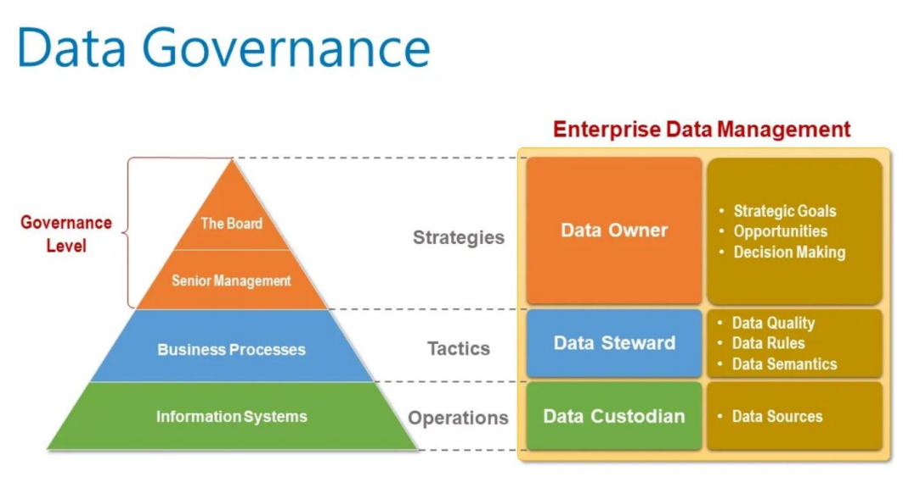
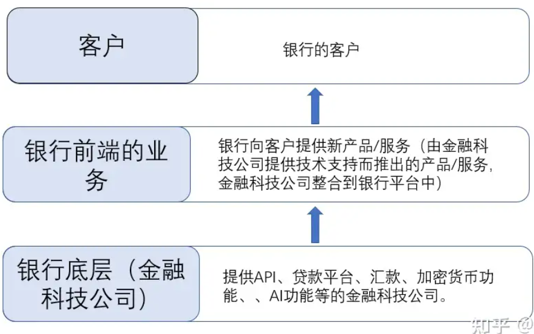

Quiz2
The topics
- virtual banking
- open banking/APIs,
- BaaS (Banking as a Service),
- BaaP (Banking as a Platform),
- Starbucks' case,
- CBDC/eHKD,
- SSI,
- ZKP,
- Algo trading strategy
Virtual Banking¶
定义¶
虚拟银行是一种完全数字化的银行，不同于传统银行的实体分支机构，它通过互联网和移动应用程序提供各种金融服务，包括存款、贷款、支付、投资和理财等。
简单来说：通过在线平台和移动应用程序提供金融服务
作用¶
- 提供便利的金融服务：虚拟银行通过在线平台为客户提供24/7的服务，不受地理位置和时间限制。
- 降低运营成本：由于不需要维护实体分支机构，虚拟银行的运营成本通常较低，可以将成本节省的部分投入到更好的服务和创新产品上。
- 促进金融包容性：虚拟银行的数字化特性使其更容易接触到一些传统银行无法触及的人群，从而促进了金融包容性。
工作原理¶
- 注册和开户：客户可以通过虚拟银行的在线平台完成注册和开户流程，通常需要提供个人身份验证信息。
- 交易和管理账户：客户可以通过虚拟银行的应用程序进行各种金融交易，包括存款、转账、支付账单、申请贷款等。
- 客户支持：虚拟银行通常通过在线聊天、电话、电子邮件等方式提供客户支持服务，帮助客户解决问题和查询信息。
优缺点¶
优点：
- 便利性：客户可以随时随地通过互联网和移动设备访问银行服务，无需到实体分支机构。
- 低成本：虚拟银行通常具有较低的运营成本，可以提供更有竞争力的利率和费用。
- 创新性：虚拟银行通常更加敏捷和创新，可以更快地推出新产品和服务。
缺点：
- 安全风险：虚拟银行可能面临网络安全风险，如数据泄露、网络攻击等。
- 依赖技术：虚拟银行的运营依赖于技术系统，一旦出现技术故障或系统崩溃，可能会影响客户的服务体验。
- 缺乏面对面服务：虚拟银行缺乏实体分支机构，客户无法获得面对面的服务和咨询。
思考¶
传统银行与虚拟银行的区别¶
Is there any differences between virtual banks and traditional banks with online banking services?
经营模式
- virtual banks ：No physical branches。是纯数字化的银行，没有实体分支机构，所有业务都通过互联网和移动应用程序进行
- traditional banks ：也提供在线银行服务，但它们通常仍然拥有实体分支机构，并且在线服务是其业务的一部分，而不是其唯一的运营模式。
成本结构
- virtual banks ：没有实体分支机构，通常拥有更低的运营成本，并且可以将这些成本节省的部分投入到更好的在线体验和创新产品上。
- traditional banks ：具有更高的运营成本，因为它们需要维护实体分支机构和员工，这可能会影响到它们在线银行服务的价格和质量。
客户体验
- virtual banks ：更加注重用户体验，其在线银行平台可能更加直观、简洁、易用，并且可能会提供更多的数字化功能和工具。
- traditional banks ：更加保守，功能可能较少，界面可能相对复杂。
创新性
- virtual banks ：通常更加敏捷和创新，它们可能更容易推出新的金融产品和服务，并且更容易跟上科技发展的步伐。
- traditional banks ：可能相对保守，由于其较为庞大的组织结构和较为复杂的决策过程，推出新产品和服务可能需要更长的时间。
Fee:
virtual banks: Withdraw cash from other banks’ ATM without handling fee
traditional banks: Has Fee
• No physical branches
• Account opening online
• No minimum account balance
• Withdraw cash from other banks’ ATM without handling fee
• Lower fees and higher interest offered to customers
• May not have full banking services. Often it focuses on
those profitable areas
• …….
• The banking IT architect and infrastructure is very different
香港虚拟银行¶
Why issue another type of virtual bank licence in Hong Kong?
There are 8 virtual banking licences issued in Hong Kong, including ZA Bank, Airstar Bank, WeLab Bank, LiviBank, Mox Bank, Ant Bank, PingAn OneConnect Bank, Fusion Bank
发放香港的另一种虚拟银行牌照的主要原因之一是为了推动金融科技创新并增加金融服务的多样性。通过增加虚拟银行牌照的数量，香港金融管理局可以促进市场竞争，提高金融服务的质量和效率。此举还有助于降低市场准入门槛，鼓励更多的金融科技公司进入市场，为消费者带来更多选择和更具竞争力的产品和服务。
另外，发放另一种类型的虚拟银行牌照也可以帮助满足不同客户群体的需求。不同类型的虚拟银行可能会专注于不同的市场细分和服务领域，以满足各种客户的需求和偏好。这种多样性有助于推动金融科技创新，并且能够让更多人受益于数字化金融服务的便利性和效率提升。
综上所述，发放另一种类型的虚拟银行牌照是为了促进金融科技创新、增加金融服务多样性，并提高金融服务的质量和效率。
open banking/APIs,¶
什么是API¶
API（Application Programming Interface）是计算机软件之间进行通信的协议和接口，用于实现数据交换和功能调用
a communication protocol, including data exchange, between computer software to computer software.
为什么有API¶
提供API的原因：
- 促进集成和互操作性：
- 允许不同软件系统之间进行通信和数据交换，实现集成和互操作性。
- 可以让开发人员利用现有的功能和数据，构建新的应用程序或服务。
- 扩展业务生态系统：
- 提供API可以吸引开发人员和合作伙伴参与到您的业务生态系统中。
- 通过开放API，可以扩大产品的影响范围，并开拓新的市场机会。
- 增强用户体验：
- 允许开发人员构建第三方应用程序或整合其他系统，为用户提供更丰富的功能和体验。
- 通过提供API，可以为用户提供更多个性化和定制化的解决方案。
- 推动创新和发展：
- 开放API鼓励创新，可以促进新产品和服务的发展。
- 通过与外部开发人员合作，可以加速产品和服务的创新和发展过程。
- 增强品牌影响力：
- 提供API可以增强品牌的可见性和影响力。
- 开放API可以吸引开发人员和合作伙伴加入到您的生态系统中，进而提升品牌的知名度和认可度。
课件
- 白标签（White Label）服务：
- 通过提供API，您可以将您的服务作为白标签提供给其他公司，他们可以将您的服务整合到他们自己的产品或服务中。
- 这包括提供基础设施即服务（IaaS）、平台即服务（PaaS）或软件即服务（SaaS）等服务。
- 构建另一个过滤器或算法：
- 您可以提供API，让其他开发人员或公司使用您的过滤器或算法，以解决他们的特定问题或增强他们的产品功能。
- 这种方式可以让您的技术被更广泛地使用，从而提高您的技术的影响力和市场份额。
- 集成ParallelDots的深度学习算法：
- 通过提供API，您可以允许其他开发人员将ParallelDots的深度学习算法与其他情感分析引擎集成，以提供新的情感分析功能。
- 这种集成可以为用户提供更广泛的情感分析功能，并且可以结合不同的算法和技术，提高分析的准确性和可信度
Open Banking¶
Open Banking（开放银行）是一种金融服务模式，通过使用开放的应用程序编程接口（API），允许不同金融机构之间共享客户的金融数据和服务。这意味着客户可以授权第三方金融服务提供商访问他们的银行账户数据，以便这些第三方可以提供更多个性化、创新的金融产品和服务。Open Banking的目标是增强金融服务的竞争性、创新性和效率性，同时提高客户体验和金融包容性
Case - UK Open Banking APIs¶
Open Banking APIs在英国的推出对零售银行市场产生了深远的影响，主要体现在以下几个方面：
- 市场改革：
- 由英国竞争与市场管理局（Competition & Markets Authority）和英国九大个人和商业活期账户提供商共同推动，Open Banking APIs的推出改变了零售银行市场格局，为消费者和企业提供了更多选择和机会。
- 数据开放性：
- Open Banking使消费者或企业可以授权公司访问他们的账户数据，以便这些公司能够提供新的产品和服务，帮助用户更安全地管理和移动资金。
- 这意味着用户可以更轻松、更高效地管理自己的资金，同时也为企业创造了更多的商业机会。
- 数据安全和隐私：
- 用户在Open Banking框架下可以更好地控制自己的账户和数据，确保其安全性和隐私。
- 参与Open Banking的公司必须受到金融行为监管局（Financial Conduct Authority）或国家主管机构的监管，这进一步增强了用户对数据安全的信心。
- 上线日期：
- Open Banking API于2018年1月13日正式推出，标志着英国银行业迈向数字化和开放化的重要一步。
Case- Open Banking in Canada¶
在加拿大推出Open Banking计划是一项重要举措，具有以下几个关键点：
- 推动金融创新：
- Open Banking计划有助于促进加拿大金融行业的创新，通过开放数据和API，鼓励各方开发新的金融产品和服务，以满足用户的需求。
- 增强用户体验：
- Open Banking使得用户可以更加便捷地管理自己的财务，享受更个性化、定制化的金融服务，提高了用户的体验和满意度。
- 推动金融包容性：
- Open Banking计划有助于促进金融包容性，包括消费者、小型企业、金融科技公司、银行和信用合作社在内的各方都可以从中受益。
- 应对国际竞争：
- 全球范围内，许多国家已经推出了Open Banking计划，包括英国、澳大利亚、新西兰等，加拿大若不跟进，可能会落后于国际竞争对手，影响国家金融体系的发展和竞争力。
- 数据安全和监管：
- Open Banking计划需要建立严格的数据安全和监管机制，确保用户数据的安全性和隐私保护，同时也要确保参与Open Banking的公司受到金融监管机构的监管。
综上所述，加拿大推出Open Banking计划旨在推动金融创新、增强用户体验、促进金融包容性，并提高国家金融体系的国际竞争力。
Case- Open Banking APIs - IBM¶
Open Banking APIs的重要性，并提出了与开放银行相关的三个原则：
- 银行客户拥有其财务数据的所有权：
- 银行客户作为其财务数据的所有者，有权决定如何使用和共享这些数据。这种理念反映了对用户数据所有权的重视，并促使银行将数据控制权归还给客户。
- 传统上银行数据被锁定在银行的IT系统中，但这种做法正在改变：
- 银行数据一直以来都被锁定在银行的IT系统中，但是随着监管政策的改变，如支付服务指令（PSD2），银行被迫“开放”其数据，使客户能够轻松地与第三方共享数据。
- 银行数据由客户控制而不是由银行控制：
- 这一原则强调了银行客户对其数据的控制权。银行只是数据的托管人，而不是数据的所有者。这种转变意味着银行需要更加关注客户的需求和利益，以及数据隐私和安全。
综合来看，这些原则强调了Open Banking的核心理念，即通过开放银行APIs，让客户更加拥有控制权和主动权，从而推动金融服务的创新和竞争力。
Open Banking APIs的重要性，并提出了以下几点观点：
- 银行产品透明且易于比较：
- 为了使银行产品透明且易于比较，产品信息需要以一致的方式描述，并且信息易于获取。这样客户才能更好地理解和比较不同的产品。
- 多方合作创造新的价值链：
- 多方合作可以共同创建新的价值链，以生产更好的产品和服务。在Open Banking的框架下，各方可以共同努力，发挥各自的优势，为客户提供更具价值的解决方案。
- 传统银行价值链的变革：
- 传统的零售银行拥有自己的分销渠道、产品和后台运营。但是，金融科技（fintech）的出现以及监管机构对更多竞争的推动正在打破这个封闭的价值链。
- 在开放银行的世界里，参与者可以专注于端到端过程中的一个或多个子步骤。他们可以专注于具有明显竞争优势的领域，并利用与其他参与者合作带来的规模和效率优势。
综合来看，这段分析强调了Open Banking的优势，即提高银行产品的透明度和比较性，促进多方合作创造新的价值链，并推动传统银行价值链的变革和创新

With open banking APIs, owner can freely transfer/release his/her financial data to anyone.
Case - HK and Singapore¶
HK¶
香港金融管理局（HKMA）推出的一系列旨在将香港引向智能银行新时代的倡议，并强调了银行业和科技的融合所带来的巨大机遇。以下是文章中提到的主要倡议的分析：
- 快速支付系统（FPS）：
- FPS支持银行和储值设施（SVF）运营商参与，支持使用手机号码或电子邮件地址在任何时间和地点进行港币和人民币支付。FPS计划于2018年9月推出，旨在提高移动零售支付的普及度，为客户和商家带来更大的便利。
- 增强型金融科技监管沙盒（FSS）2.0：
- FSS 2.0将具有三个新特性：（i）设置金融科技监管聊天室，为银行和科技公司在金融科技项目的早期阶段提供快速反馈；（ii）科技公司可以通过聊天室直接访问沙盒，而无需经过银行；（iii）将香港金融管理局、证券及期货事务监察委员会和保险局的沙盒连接起来，以便进行跨部门金融科技产品的试点测试。
- 促进虚拟银行发展：
- 香港金融管理局欢迎在香港引入虚拟银行，并将与行业协商，审查和修订2000年发布的《虚拟银行授权指南》。
- 银行便捷化倡议：
- 香港金融管理局将成立一个新的工作组，与银行业合作，减少客户数字体验中的监管摩擦，包括远程开户、在线金融和在线财富管理。
- 开放应用程序编程接口（API）：
- 香港金融管理局将制定开放API的政策框架，以促进银行业对API的开发和更广泛应用，从而通过银行和科技公司的合作刺激创新，改善金融服务。目标是在2017年底左右为银行业最终确定开放API政策。
- 加强跨境合作：
- 香港金融管理局将加强与其他司法管辖区机构在金融科技发展方面的合作。最新的倡议包括与深圳市金融发展服务办公室合作，以及开发一个分布式账本技术（DLT）平台，以数字化香港银行的贸易融资流程，并可能与新加坡的贸易平台进行连接。
- 加强研究和人才发展：
- 香港金融管理局将加强与香港应用科技研究院、科技园和数码港的合作，推广引入新技术和流程，提高银行客户的速度和便利性，并培养香港的金融科技人才。
新加坡
新加坡星展银行（DBS Bank）推出了世界上最大的API开发者平台。以下是对文章内容的分析：
- API平台规模：
- DBS银行的API平台包含了155个API，涵盖了超过20个类别，包括资金转账、奖励和实时支付等。这表明DBS银行在API开发方面投入了大量资源，并且平台的规模庞大。
- 合作伙伴：
- 文章提到，已有50家公司在使用该平台开发解决方案，其中包括AIG、麦当劳、MSIG、PropertyGuru等大型企业，以及Activpass、FoodPanda、Homage和soCash等创业公司。这些合作伙伴的加入表明DBS银行的API平台受到了广泛的关注和应用。
- 技术基础：
- DBS银行的首席信息官David Gledhill在声明中指出，DBS银行在九年前开始了技术基础设施的转型之旅，这使得他们能够在数字化方面领先于其他许多银行。DBS银行具备了类似金融科技的敏捷性和灵活性，并且平台具备包容性，这将在以前未曾想象的方式上实现变革，对客户和银行都将产生重大影响。
Open Banking APIs - HK - Difference Phase¶
Phase 1: Product and service information - also described as “Readonly” data provided by banks to detail their products and services;
Phase 2: Subscription and new applications for product/service – data which facilitate the customer acquisition process by allowing online submissions/application of credit cards, loans or other bank products;
Phase 3: Account information data – private data required for the retrieval and alteration of account information of authenticated customers (balance, transaction history, limits, payment schedules, etc.); 、
Phase 4: Transactions data – Banking transactions and payment or scheduled payments/transfer initiated by authenticated customers
香港开放银行框架中的不同阶段，以及银行向第三方提供数据的范围和方式。以下是对每个阶段的理解：
- 阶段一：产品和服务信息（只读数据）：
- 在这个阶段，银行提供产品和服务的信息，这些信息是只读的，意味着第三方可以查看但不能修改。这些信息可以包括各种银行产品的详细描述、利率、费用等。
- 阶段二：订阅和新应用产品/服务：
- 在这个阶段，银行提供的数据可以用于在线提交或申请信用卡、贷款或其他银行产品。这些数据有助于简化客户获取流程，使客户可以通过在线渠道方便地提交申请。
- 阶段三：账户信息数据：
- 这个阶段涉及到对已认证客户的私密账户信息的访问，包括余额、交易历史、限额、付款计划等。第三方需要访问这些数据来为客户提供个性化的服务，例如财务管理、预算规划等。
- 阶段四：交易数据：
- 这个阶段涉及到已认证客户发起的银行交易和支付，包括即时支付、定期支付或转账等。第三方可以通过访问这些数据来提供更加智能化的金融服务，例如自动化账单支付、个性化理财建议等。
这些阶段逐渐扩大了银行提供给第三方的数据范围，从最初的产品和服务信息到客户的账户信息和交易数据，为第三方提供了更多的数据和功能，促进了更多创新和个性化服务的开发。
Monetize Open Banking APIs¶
API ecosystem:
- Banking as a platform
- Banking as a service
Google Maps¶
开放银行API的变现方式，并举了Google Maps的例子作为API的典范。以下是对这段分析的详细解读：
- Google Maps作为API的典范：
- 作者指出Google Maps是一个很好的API示例，许多公司、个人和政府都将其作为产品和服务的组成部分。这表明Google Maps的API具有广泛的适用性和灵活性，可以满足不同需求的用户。
- 对Google Maps API的使用方式：
- 公司、个人和政府通过Google Maps API实现了多种功能。例如，在他们自己的网站和应用中，他们可以添加银行分行定位器、交通报告，甚至是NORAD的圣诞老人追踪器的嵌入式导航。
- API的“层叠”应用：
- 通过“层叠”到Google Maps API，用户可以在其产品和服务中集成各种功能，从而丰富了用户体验。这种“层叠”应用的方法提供了一种灵活的方式，使用户能够根据自己的需求定制功能。
API Monetization model¶
can you give examples of how banking apis can be part of an organization's services or products?
以下是银行API如何成为组织服务或产品的一部分的例子：
- 金融科技公司的数字钱包：
- 金融科技公司可以利用银行API来构建数字钱包应用程序，使用户能够在一个平台上管理其银行账户、进行转账、支付账单等操作。
- 零售商的消费信贷服务：
- 零售商可以与银行合作，将银行的支付启动服务（PIS）API整合到其购物应用程序中，为客户提供分期付款、消费贷款等金融服务。
- 企业的财务管理平台：
- 企业可以利用银行的账户信息服务（AIS）API，将银行账户信息整合到其财务管理平台中，以实时监控资金流动、管理账户余额等。
- 物流公司的支付解决方案：
- 物流公司可以利用银行的支付确认服务（FCS）API，验证客户支付能力后，为客户提供更安全、更方便的支付解决方案。
- 数字平台的金融整合服务：
- 数字平台（如电商平台、社交媒体平台）可以整合银行的开放API，为用户提供金融产品购买、支付、理财等服务，丰富用户体验。
Types of APIs:¶
1.Data APIs
\2. Transaction APIs
\3. Application Integration APIs
4.User interface APIs
\5. Application Component APIs
6.Utility and Helper APIs
example case:
- 账户信息服务（AIS）API：
- 提供对账户详细信息、余额和交易历史的访问。
- 允许第三方应用程序检索用户银行账户的信息。
- 支付启动服务（PIS）API：
- 启用从用户银行账户发起支付。
- 通过第三方应用程序促进资金转移和支付交易。
- 资金确认服务（FCS）API：
- 在处理支付前验证用户账户中资金的可用性。
- 为商家或服务提供者提供用户支付能力的保证。
- 卡发行商API：
- 允许第三方应用程序与信用卡/借记卡发行商集成。
- 提供功能，如交易历史、卡片详情和消费限额。
- 欺诈防范API：
- 提供检测和防止欺诈活动的工具和服务。
- 实现对交易和身份验证过程的实时监控。
- 身份验证API：
- 在账户注册或交易过程中帮助验证用户身份。
- 通过多因素身份验证增强安全措施。
- 客户认证API：
- 提供安全客户认证方法。
- 确保只有授权用户才能访问敏感银行信息或发起交易。
- 市场API：
- 促进第三方金融产品和服务整合到银行平台中。
- 允许客户通过单一界面访问各种金融产品。
- 数据丰富API：
- 通过提供额外的上下文或见解来增强金融数据。
- 整合外部数据源，为用户的财务状况提供更全面的视图。
Any more examples?
[Hints: think about the insurance, wealth management, digital property, regulatory requirement areas]
- 保险：
- 理赔处理API：通过允许保险公司访问客户的相关数据，如交易历史和账户信息，简化理赔处理流程。
- 风险评估API：提供给保险公司访问客户的财务数据，以评估其风险概况，并相应地量身定制保险产品。
- 财富管理：
- 投资组合API：使财富管理平台能够与银行集成，访问客户的投资组合，并提供个性化的投资建议。
- 基于目标的储蓄API：允许财富管理应用程序访问客户的银行账户信息，设定储蓄目标，并跟踪实现目标的进展。
- 数字资产：
- 房地产融资API：促进银行与房地产平台之间的集成，根据客户的财务状况为房地产购买提供融资选择。
- 租金支付API：使租户可以通过第三方租赁管理平台直接从他们的银行账户支付租金。
- 监管要求：
- 合规报告API：通过提供对交易数据和客户信息的访问，协助银行和金融机构生成监管机构要求的合规报告。
-
KYC（了解您的客户）API：使银行能够验证客户身份，并使用外部数据源，如信用局和政府数据库，履行客户入职的监管要求。
-
Insurance:
- Claims Processing APIs: Streamline the claims processing workflow by allowing insurers to access relevant customer data from banks, such as transaction history and account information.
- Risk Assessment APIs: Provide insurers with access to a customer's financial data to assess their risk profile and tailor insurance offerings accordingly.
- Wealth Management:
- Investment Portfolio APIs: Enable wealth management platforms to integrate with banks to access customer investment portfolios and provide personalized investment advice.
- Goal-based Savings APIs: Allow wealth management apps to access customers' bank account information to set savings goals and track progress towards achieving them.
- Digital Property:
- Real Estate Financing APIs: Facilitate the integration between banks and real estate platforms to provide financing options for property purchases based on a customer's financial profile.
- Rental Payment APIs: Enable tenants to make rental payments directly from their bank accounts through third-party rental management platforms.
- Regulatory Requirements:
- Compliance Reporting APIs: Assist banks and financial institutions in generating compliance reports required by regulatory authorities by providing access to transaction data and customer information.
- KYC (Know Your Customer) APIs: Enable banks to verify customer identities and fulfill regulatory requirements for customer onboarding using data from external sources, such as credit bureaus and government databases.
Open Government¶
Open Banking APIs + Open Government
= What innovative services you can
offer to local citizen and overseas
visitors/ consumers/investors/buyers?
结合开放银行API和开放政府，可以提供以下创新服务给本地居民和海外访客/消费者/投资者/购买者：
- 智慧城市应用： 利用开放政府数据和银行API，开发智慧城市应用，提供实时交通信息、城市活动日历、环境质量监测等服务，帮助市民更好地了解和利用城市资源。
- 个性化旅游体验： 结合银行API和旅游景点数据，开发个性化旅游应用，为游客提供定制化的旅游路线、景点推荐、美食指南等服务，提升他们的旅游体验。
- 金融教育和咨询服务： 利用开放银行API和政府金融数据，开发金融教育平台和咨询服务，向市民和访客提供理财知识、投资建议、信用评估等信息，增强他们的金融素养。
- 跨境支付和汇款服务： 基于开放银行API和政府国际贸易数据，开发跨境支付和汇款服务，为海外访客和投资者提供便捷的支付和汇款渠道，促进国际贸易和投资。
- 社区共享经济平台： 结合银行API和政府社区资源数据，建立社区共享经济平台，促进本地居民之间的资源共享，包括共享车辆、住房、工具等，提升社区生活质量。
- 环保和可持续发展项目支持： 利用开放政府数据和银行API，支持环保和可持续发展项目，包括提供绿色能源贷款、资助环保创业项目等，鼓励市民和投资者参与可持续发展事业。
BaaS (Banking as a Service)¶
定义¶
银行即平台跟银行即服务是一种相对应的服务。
银行即服务模式意味着银行机构与金融科技或非金融企业合作，让它能名正言顺的使用银行的产品为其客户群体提供金融服务。
银行即平台，意味着金融科技公司或其他任何软件/技术公司可以开发一些服务，并将其“租借“给银行。
一家航空公司，为加强客户忠诚度，市场部竭尽脑汁想了好几种方案。
1为客户提供借记卡，客户使用此卡付款可额外获得忠诚度积分。
2 为客户提供机票在线贷款服务，客户无需因为资金不足/紧张而无法安排旅游出行，这样不仅可以增加机票的销售数量，并直接影响了客户的消费金额，同时贷款服务也营造了一种更紧密的客户关系，其接触点远远多于单一的销售。
提供借记卡、提供贷款服务等等，这些都是银行服务，每个国家/地区的地方政府都要求只有持有银行执照的机构，才能提供银行服务。
银行即服务描述了一种模式，即持牌银行将其数字银行服务整合到其他非银行企业的产品中，这样一来，上述的航空公司，就可以名正言顺地为其客户提供移动银行账户、借记卡、贷款和支付服务等数字银行服务，而并不需要自己获得银行牌照。
银行的系统通过API和webhooks与航空公司的系统进行沟通，使你的客户能够直接通过你的航空公司的网站或应用程序访问银行服务。你的航空公司从未真正接触过客户的钱，它只是作为一个中间人，这意味着它没有银行必须履行的任何监管职责的负担。
作用¶
工作流程¶
优缺点¶
例子¶
Product Origination: Account opening directly from third party or partner's web site or app.
Car Loans: Offering car loans as an integrated part of the car purchase journey in partnership with car dealerships. Treasury: Treasury, cash management, international payments offered as APIs for integration into ERP/TMS. Buy Now Pay Later: Pay in easy instalments initiated through e-commerce websites.。 Industry Initiatives: Industry alliances with partners such as telecoms and airlines, e.g IATA Pay, an industry-supported initiative in which payments for airline tickets are made from the customer's bank account directly into the bank account of the merchant.
在零售店/中小企业开立账户，作为由不同银行支持的忠诚客户，提供不同的金融服务，例如汽车贷款、分期付款。 • 零售店/中小企业/电信公司可以提供信用服务，而不是使用万事达卡或Visa。 • 银行作为点对点外币兑换的第三方支付者。 • 商家可以提供奖学金，例如1000美元的奖学金，包括500美元的百佳购物券、300美元等值的CX积分、200美元影城优惠券
BaaP (Banking as a Platform),¶
定义¶
银行即平台跟银行即服务是一种相对应的服务。
银行即服务模式意味着银行机构与金融科技或非金融企业合作，让它能名正言顺的使用银行的产品为其客户群体提供金融服务。
银行即平台，意味着金融科技公司或其他任何软件/技术公司可以开发一些服务，并将其“租借“给银行。银行允许金融机构等公司利用自身的专业知识和资源，包括基础设施和应用程序，为银行开展服务提供技术支撑。传统零售银行业务通常依赖实体店提供客户服务，但数字平台使银行的客户能够从任何支持互联网的设备访问银行服务，并能享受到于互联网上办理银行业务如实体店一般的方便与快捷。。
银行即平台消除了银行自己构建和管理数字基础设施以支持提供银行服务的痛苦，并使银行能够更加专注于提供一流的客户体验。金融机构等公司已经拥有实施数字化转型所需的服务器和软件，因此金融机构只需要专注于确定使用哪些软件以及如何最好地将其集成到银行机构中。

作用
工作流程
优缺点¶
银行即平台，使银行能够专注于其核心业务，不断提供新的产品和服务，具体优势表现有以下几点：
1）减少了银行开发时间和成本
2）维护成本被转移到开发公司
3）为客户引进新的服务及产品
4）加强在市场中的地位
5）提高客户满意度
目前国内常见的银行服务中，银行提供的保险和其他金融服务都属于银行即平台的模式的应用。
例子¶
一个数字钱包/金融科技/第三方支付（TTP）提供聚合银行服务，并通过API与不同银行对接。
中小企业的会计系统可以将他们的POS/库存系统与银行对接，用于支付和应收款对账。
财富科技：智能投资，自动应收款、支付、储蓄等。
非金融市场，如杂货店、大学等，可以提供更好的忠诚度计划。
Starbucks' case - small change remittance¶
在星巴克案例中，使用开放银行APIs，银行作为服务（BaaS）可以提供以下服务：
- 小额汇款服务：
- 借助开放银行APIs，星巴克可以提供小额汇款服务，使客户能够通过星巴克卡或应用程序在参与国家之间进行便捷的资金转移。
- 国际星巴克积分使用：
- 通过开放银行APIs，星巴克可以扩展其积分兑换服务，使客户能够在参与国家之间使用积分进行购物，而不仅仅局限于本国。
- 跨境支付和汇款：
- 借助开放银行APIs，星巴克可以提供跨境支付和汇款服务，使客户能够在不同国家之间便捷地进行支付和资金转移。
- 汇率和费用透明度：
- 开放银行APIs可以使星巴克提供实时汇率和费用信息，帮助客户更清晰地了解在不同国家使用星巴克卡的费用和汇率情况。
总的来说，通过利用开放银行APIs，星巴克可以提供更便捷、更灵活的跨境支付和积分兑换服务，为国际旅行者和客户提供更好的体验。
从星巴克的案例中，我学到了以下几点：
- 全球化需求： 星巴克作为一家全球性企业，面对来自不同国家和地区的客户需求。他们通过在多个国家提供相同的服务和产品，为国际旅行者提供了便利。
- 跨境支付的需求： 星巴克的客户需要在不同国家之间进行支付和资金转移。因此，星巴克提供了跨境支付和汇款服务，使客户能够在全球范围内使用其卡片和积分。
- 开放银行的潜力： 星巴克可以利用开放银行APIs，为其客户提供更多金融服务，如跨境支付、汇款和积分兑换。这种开放性的银行服务有助于提高客户体验和满足不同国家和地区的需求。
将银行业和金融服务民主化（或分权化、免费银行服务），确实能够带来许多好处，特别是在接触到未开户、银行服务不足和弱势人群方面。以下是为什么：
- 金融包容性： 通过将银行服务民主化，更多的人，特别是那些处于服务不足社区或农村地区的人们，可以获得基本的金融服务。这包括储蓄账户、支付服务和获取信贷等基本银行设施。
- 减少不平等： 为边缘人群提供银行服务可以通过给予他们管理财务、储蓄和积累资产的工具和资源来减少经济不平等。这有助于提高整体经济实力和社会流动性。
- 提升效率和竞争力： 银行业民主化可以促进金融机构之间的竞争，带来行业创新和效率提升。当更多的参与者进入市场时，他们努力提供更好的服务和产品，最终惠及消费者。
- 数字化转型： 民主化通常与数字化相结合，利用技术提供便捷、可访问的金融服务。数字银行平台可以触达更广泛的受众，包括偏远地区的人们，并以较低的成本提供服务，相较于传统的实体银行。
- 金融教育和素养： 银行服务民主化还涉及提供金融教育和素养计划，赋予个人知识和技能，使其能够做出明智的金融决策。这可以带来更大程度的金融韧性和稳定性。
总的来说，银行业和金融服务的民主化对促进经济发展、减少贫困和促进社会包容性增长起着至关重要的作用。它与确保每个人都能平等获得金融福祉的机会和资源的目标是一致的。
在发达国家，也存在许多未开户或银行服务不足的情况，这些人通常被称为“未开户/银行服务不足”群体。以下是一些发达国家中可能出现的“未开户/银行服务不足”场景：
- 低收入家庭： 许多低收入家庭可能没有稳定的银行账户，或者只有非常基本的银行服务。这可能是由于缺乏资金、信用不良或缺乏对银行服务的了解等因素所致。
- 移民或难民群体： 移民或难民可能在移民新国家后面临银行服务的挑战。他们可能面临语言障碍、文化差异、缺乏身份证明文件或信用记录等问题，导致他们难以获得银行账户或借贷服务。
- 老年人群体： 一些老年人可能没有使用现代银行服务的经验，或者可能不熟悉数字化银行系统。他们可能更喜欢使用现金交易，或者由于身体健康或认知问题而无法轻松访问银行。
- 农村地区居民： 在一些发达国家的偏远农村地区，银行分支机构可能稀缺，导致居民难以获得银行服务。此外，一些农村居民可能更倾向于使用现金进行交易，而不是使用数字支付方式。
- 信用记录不良者： 有些人可能由于信用记录不良或金融困境而无法获得传统的银行服务。这可能是由于逾期账单、违约贷款或其他金融问题导致的，使他们被银行视为高风险客户。
CBDC¶
什么是CBDC¶
Central Bank Digital Currency
CBDC（中央银行数字货币）是由中央银行发行和监管的数字货币，其特点如下：
- CBDC是由一个国家的中央银行发行和监管的，是中央银行的直接责任。
- CBDC是法定货币。
- CBDC通过电子平台使用，例如电子钱包等。
- CBDC由政府支持，不太可能像比特币一样使用区块链，而可能采用其他形式的分布式账本技术。
- 可能存在两种类型的CBDC，即批发CBDC和零售CBDC。批发CBDC仅限金融机构用于银行间交易，而零售CBDC则面向普通公众。
优缺点¶
优点：
- 效率和成本节约：CBDC可以简化支付流程，降低交易成本，并提高金融交易的效率。
- 金融包容性：CBDC可以通过手机为无银行账户或少有银行账户的人提供更广泛的金融服务。
- 减少伪造：由于CBDC可以追踪，并由中央银行在安全且防篡改的平台上发行，因此伪造风险被最小化。
- 货币政策工具：中央银行可以通过CBDC对利率和货币供应产生更直接的控制。
缺点：
- 隐私担忧：CBDC交易的可追踪性引发了隐私担忧。
- 技术风险：对数字基础设施的依赖使CBDC容易受到技术风险的影响，如网络攻击和系统故障。
- 对传统银行业的干扰：CBDC可能会扰乱传统银行体系，因为个人可能选择直接与中央银行持有数字货币，从而绕过商业银行。
- 利率挑战：CBDC可能对负利率的实施构成挑战，因为人们可能更愿意在负利率期间持有实体现金而不是数字货币。
这些优缺点展示了CBDC作为一种新兴金融工具所带来的潜在利益和挑战。
CBDC and eHKD¶
- 2019年，香港金融管理局（HKMA）和泰国央行（BOT）共同发起了Inthanon-LionRock项目，研究了批发CBDC用于跨境支付的潜力。2021年2月，该项目进入第二阶段，并随后更名为多个CBDC桥梁（mBridge）项目。阿联酋央行和中国人民银行数字货币研究所加入了该项目，并得到了国际清算银行创新中心的大力支持。
- 2021年6月，HKMA启动了e-HKD项目，这是一个旨在研究e-HKD可行性的零售或通用CBDC（rCBDC）项目。该项目包括两个部分：技术实验研究和其他问题的全面研究，包括法律和政策考虑。
- 在任何rCBDC中，都有两个元素，即CBDC本身（即资产和支付工具本身）和允许CBDC进行转移和支付的基础设施。CBDC本身涉及经济设计，包括访问、报酬、数量限制和可转换性等方面。基础设施涉及CBDC的提供方式、功能设计、使用的技术以及实施的操作流程和规则。
- rCBDC面临的挑战包括：中央银行和私营部门之间的责任和职能安排，用户和不同利益相关者如何与CBDC交互以及使用CBDC进行的支付类型，以及这对系统的用户友好性、隐私级别和基础设施实施的技术选择产生了什么影响。
- rCBDC有不同的体系结构设计，包括直接（单层）rCBDC模型和双层rCBDC模型。直接rCBDC模型通过一个完全由央行运营的单层系统提供rCBDC。双层rCBDC模型则涉及央行和私营部门中间人之间的分工，以进行CBDC的分发和流通。
- 四种分布模型包括直接CBDC模型的变体、混合模型、中介模型和以CBDC支持的电子货币。这些模型涉及不同的基础设施和操作方式，以及央行和私营部门之间的责任分工。
eHKD Use Case¶
DCEP*¶
DCEP（数字货币电子支付）是中国的国家数字货币，具有以下特点：
- DCEP是由中国人民银行（PBoC）发行和监管的数字货币，使用区块链（中心化）和密码学技术构建。
- 这种革命性的加密货币可能成为世界上第一个由中央银行发行的中央银行数字货币（CBDC）。
- 该货币的目标和目标是增加人民币的流通量和国际影响力 - 最终希望人民币成为像美元一样的全球货币。但这是否是其目标？还是要信任另一个政府或点对点？
- 像Facebook（Meta）Libra（在2020年更名为Diem）这样的项目对任何国家的主权构成威胁，即法定货币/法定货币与加密货币之间的竞争。到2022年，该项目已经停止了。
DCEP的重要性在于，它被设计为替代准备货币（M0）系统，减少银行转账的成本和摩擦。DCEP将减轻离线纸币交易的风险，如匿名伪造、洗钱和非法融资。这是因为监管机构可以更好地监控数字货币交易，从而改善金融和货币监管。DCEP还可以减少维护和回收纸币和硬币的成本。
DCEP将具有基于NFC的支付选项，无需在转账期间设备在线。这将作为纸币的直接替代品，因为DCEP可以在没有互联网覆盖的地区使用。此外，DCEP不需要将移动设备绑定到银行账户，这意味着无银行账户的人群也可以使用这种数字货币。
DCEP是在中心化私有网络上运行的数字货币 - 中国人民银行完全可以访问和控制该货币。这与比特币形成了巨大的对比，比特币是在开放的分散网络上运行的，没有中心化的领导者。在DCEP的情况下，中国人民银行有能力创建或销毁DCEP。
DCEP和比特币/加密货币在技术上存在很大的差异。关键区别在于，DCEP不一定使用区块链技术，并且它是由中央集权机构控制的中心化货币。然而，必须记住我们并不完全了解DCEP的技术细节，因此我们不知道区块链和DCEP之间的这座桥梁是如何工作的，如果它工作的话。
Internationalization of RMB/eCNY*¶
这些分析指出，DCEP的发行有助于推动人民币的国际化并重塑当前的跨境支付系统。在人民币跨境互联银行支付系统（CIPS）于2015年10月初投入运营之前，人民币的跨境清算和结算主要通过CHIPS（清算所银行间支付系统）或SWIFT（国际银行间金融电信协会）进行。
然而，CHIPS是一家美国公司。特别是SWIFT被中国人视为令人担忧的原因是，几乎必须使用SWIFT进行跨国银行间转账。因此，控制SWIFT数据中心的人将能够访问几乎每一笔跨境汇款的信息，一些中国人认为这个人是美国。尽管SWIFT声称是一个中立的国际组织，但25位董事中有12位来自美国及其盟友。
此外，SWIFT的交易数据被发现已经提供给了美国。因此，有人认为中国被美国通过SWIFT系统牵制，因此，在国际化人民币的过程中，中国需要拥有自己的全球银行系统，即DCEP。
SSI¶
SSI (Self Sovereignty Identity)
自主主权身份（Self Sovereign Identity，SSI）
User-centric model
- 创建一个称为DID（Decentralized Identifier）的唯一标识符，并将其存储在分布式账本（DLT）/区块链中。
- DID与一对公钥和私钥相关联（私钥的某些值的哈希值，即私钥的摘要/数字签名）。
- 当个人想要在特定交易或服务中证明其身份时，他们可以共享一个与他们的DID相关联的可验证凭证。
- 可验证凭证由三部分组成：
- 声称：我是约翰·史密斯，年龄超过18岁
- 凭证：由受信任的机构颁发，包含声明、颁发者的身份、凭证的到期日期等信息
- 证明：用于验证凭证的加密算法，例如颁发者和用户的公钥，以及验证者的私钥。
Building Blocks
构建要素
- 可验证凭证
：
-
包含声明，包括属性（年龄、身高、体重等）、关系（母亲、父亲、雇主、公民身份等）或权利（医疗福利、图书馆特权、会员奖励或法律权利）。
-
颁发者、持有者和验证者
：
-
颁发者是颁发可验证凭证的受信任实体，持有者是持有和管理可验证凭证的个体，验证者是验证持有者身份的实体。
-
数字钱包
：
-
存储可验证凭证和加密密钥的数字化钱包，用于管理个体的身份信息。
-
数字代理和中心
：
-
每个数字钱包都由数字代理“封装”，作为软件守护者，确保只有钱包的控制者（通常是身份所有者）可以访问存储的可验证凭证和加密密钥。
-
分散式标识符（DID）
：
-
用于唯一标识个体的标识符，通常存储在分布式账本（DLT）或区块链中。
-
分布式账本（DLT）/区块链
：
-
用于存储和管理DID以及相关的可验证凭证和加密密钥的技术基础。
-
治理框架
：
- 用于管理和监督SSI生态系统的规则和标准。
user-case
How to establish your genuine identity the first time?
优缺点¶
自主主权身份（SSI）的优点和缺点如下：
优点：
- 增强隐私和安全性：SSI可以减少身份盗窃等安全威胁，因为个体控制自己的个人身份数据。
- 用户控制个人身份数据：个体可以自主管理和控制自己的个人身份信息，而不需要依赖中心化的身份管理机构。
缺点：
- 技术复杂性：SSI的实施涉及到复杂的加密和分布式技术，可能需要专业的技术团队进行开发和维护。
- 需要良好的密钥管理/托管/恢复系统：如果没有有效的密钥管理系统，用户可能会永久丢失他们的身份数据，因此需要建立可靠的密钥管理和恢复机制。
- 监管准备：SSI的实施可能需要符合各种监管要求和标准，因此需要确保技术和流程的合规性。
- 脱机问题：在设备丢失或损坏的情况下，用户可能无法访问其个人身份数据，因此需要解决离线访问和恢复的问题。
SSI – DLT¶
Which type of DLT for SSI?
Any other applications?
对于自主主权身份（SSI），选择何种类型的分布式账本技术（DLT）取决于其需求和特点。以下是一些常见的DLT类型，可以用于实现SSI：
- 区块链：区块链是一种分布式数据库，数据以区块的形式连接在一起，并通过加密技术保证安全性和不可篡改性。区块链可用于存储和验证个人身份数据以及与之相关的验证凭证。
- 分布式账本技术（DLT）：除了区块链之外，还有其他形式的DLT，例如图结构或有向无环图（DAG）。这些技术可以提供与区块链类似的分布式特性，但可能在不同的方面具有不同的优势。
- 去中心化标识协议：有一些特定的去中心化标识协议，如DID（Decentralized Identifier）和Verifiable Credential等，这些协议为SSI提供了基本的框架和标准，可以在各种DLT上实现。
除了自主主权身份之外，DLT还可以用于许多其他应用。例如：
- 供应链管理：DLT可以用于跟踪和管理供应链中的物流和商品流动，从而提高透明度和可追溯性。
- 金融服务：DLT可以用于实现分布式支付系统、智能合约和数字资产管理，从而改善金融服务的效率和安全性。
- 知识产权管理：DLT可以用于管理和保护知识产权，如版权、专利和商标，确保其真实性和不可篡改性。
- 投票和选举系统：DLT可以提供安全、透明和可验证的投票系统，防止选举舞弊和操纵。
ZKP¶
(Zero Knowledge Proofs)
Algo trading strategy.¶
算法交易策略（Algo Trading Strategy）。算法交易是利用计算机程序执行的自动化交易策略，旨在利用市场上的各种价格和量的数据进行交易。以下是一些常见的算法交易策略：
- 趋势跟踪策略：这种策略利用市场趋势的方向，通过识别并跟随价格的长期趋势来进行交易。常见的趋势跟踪指标包括移动平均线和趋势线。
- 均值回归策略：均值回归策略基于统计学原理，假设价格会围绕着其平均值波动。当价格偏离平均值时，该策略会采取反向交易，以期望价格回归到平均值附近。
- 套利策略：套利策略利用市场中不同交易所或不同资产之间的价格差异来进行交易。这种策略旨在利用价格差异进行低风险、高收益的交易。
- 市场制造商策略：市场制造商策略涉及在市场上提供流动性，通过同时提交买入和卖出订单来收取买卖价差。这种策略旨在从市场交易中赚取利润，而不依赖于市场方向的变化。
- 统计套利策略：这种策略利用统计学原理和数学模型来识别市场中的价格不一致或异常，从而进行交易。这种策略通常需要大量的数据分析和模型建立。
Data analytics
Unemployment info
Integrity check (personal, company, ….)
Projected revenues (e.g. airline, hotel, …..)
- Can you think of an innovative way to predict consumer behaviours?
- Can you think of an innovative way to predict investors behaviours?